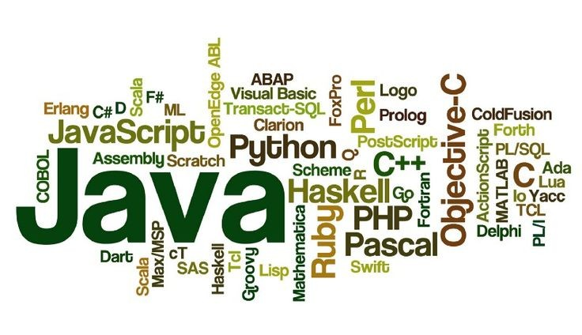

A programming language is a formal language, which comprises a set of instructions that produce various kinds of output. Programming languages are used in computer programming to implement algorithms. Most programming languages consist of instructions for computers. There are programmable machines that use a set of specific instructions, rather than general programming languages. Early ones preceded the invention of the digital computer, the first probably being the automatic flute player described in the 9th century by the brothers Musa in Baghdad, during the Islamic Golden Age. Since the early 1800s, programs have been used to direct the behavior of machines such as Jacquard looms, music boxes and player pianos. The programs for these machines (such as a player piano's scrolls) did not produce different behavior in response to different inputs or conditions.
Thousands of different programming languages have been created, and more are being created every year. Many programming languages are written in an imperative form (i.e., as a sequence of operations to perform) while other languages use the declarative form (i.e. the desired result is specified, not how to achieve it). The description of a programming language is usually split into the two components of syntax (form) and semantics (meaning). Some languages are defined by a specification document (for example, the C programming language is specified by an ISO Standard) while other languages (such as Perl) have a dominant implementation that is treated as a reference. Some languages have both, with the basic language defined by a standard and extensions taken from the dominant implementation being common
Computer programming languages allow us to give instructions to a computer in a language the computer understands. Just as many human-based languages exist, there are an array of computer programming languages that programmers can use to communicate with a computer. The portion of the language that a computer can understand is called a “binary.” Translating programming language into binary is known as “compiling.” Each language, from C Language to Python, has its own distinct features, though many times there are commonalities between programming languages. These languages allow computers to quickly and efficiently process large and complex swaths of information. For example, if a person is given a list of randomized numbers ranging from one to ten thousand and is asked to place them in ascending order, chances are that it will take a sizable amount of time and include some errors.